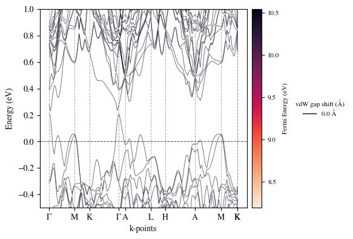
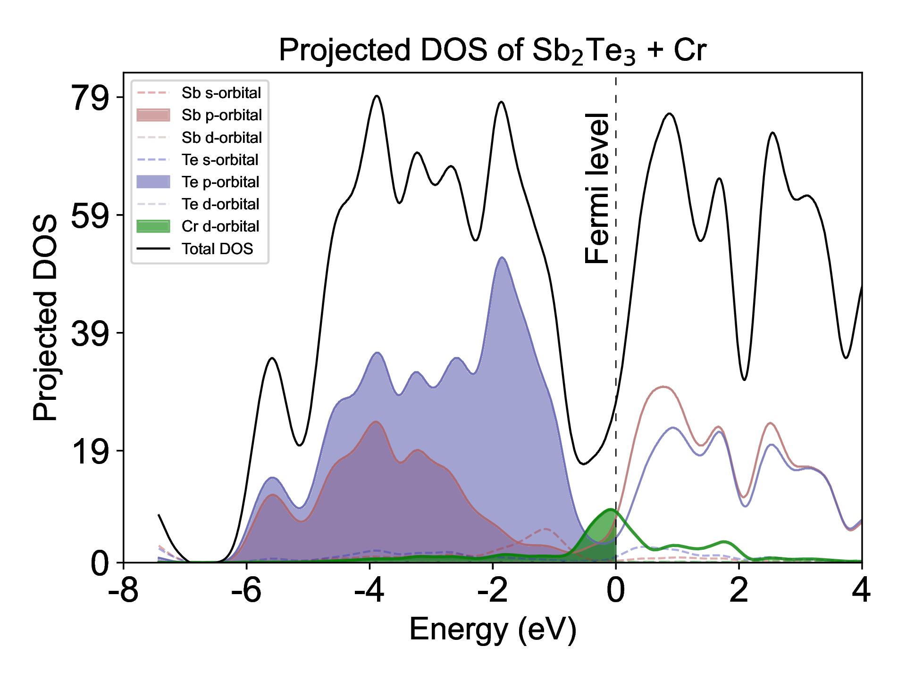

Beautiful Plots for Materials Science
October 5, 2024
Creating publication-quality figures is an essential skill for any computational materials scientist. Over the years, I've developed a collection of plotting scripts that produce beautiful, informative visualizations for band structures, density of states, crystal structures, and more. In this post, I'll share my favorite plotting techniques and provide ready-to-use scripts.
Design Principles for Scientific Plots
Before diving into the code, here are my guiding principles for creating effective scientific visualizations:
- Clarity First: The data should be immediately understandable
- Consistent Style: Use the same color schemes and fonts across all figures in a paper
- High Resolution: Always save in vector formats (PDF, SVG) when possible
- Accessibility: Use colorblind-friendly palettes
- Minimal Ink: Remove unnecessary elements that don't add information
1. Band Structure Plots
Band structures are fundamental to understanding electronic properties. Here's my go-to script for creating publication-quality band structure plots with proper high-symmetry point labels and Fermi level indication.

Example: Silicon band structure with highlighted band gap
Click to view script - Creates publication-quality band structure plots from QE output
#!/usr/bin/env python3
"""
Publication-quality band structure plotter for Quantum ESPRESSO
Author: Yi Cao
Usage: python plot_band_structure.py bands.dat
"""
import numpy as np
import matplotlib.pyplot as plt
from matplotlib import rcParams
import matplotlib.patches as mpatches
# Set publication quality defaults
rcParams['font.family'] = 'sans-serif'
rcParams['font.sans-serif'] = ['Arial']
rcParams['font.size'] = 14
rcParams['axes.linewidth'] = 1.5
rcParams['xtick.major.width'] = 1.5
rcParams['ytick.major.width'] = 1.5
rcParams['xtick.major.size'] = 6
rcParams['ytick.major.size'] = 6
rcParams['lines.linewidth'] = 1.5
# [INSERT YOUR BAND STRUCTURE PLOTTING CODE HERE]
# This is where you would insert your specific band structure plotting implementation
# Example structure:
def plot_band_structure(filename, fermi_energy=0.0, ylim=(-10, 10),
high_sym_points=None, save_name='band_structure.pdf'):
"""
Plot band structure from QE bands.dat file
Parameters:
-----------
filename : str
Path to bands.dat file
fermi_energy : float
Fermi energy in eV
ylim : tuple
Y-axis limits (min, max) in eV
high_sym_points : dict
Dictionary of high symmetry points {'label': k_position}
save_name : str
Output filename
"""
# Placeholder for your implementation
pass
# Color scheme for different band types
colors = {
'valence': '#1f77b4', # Blue
'conduction': '#ff7f0e', # Orange
'fermi': '#2ca02c', # Green
'gap': '#d62728' # Red
}
if __name__ == "__main__":
# Example usage
plot_band_structure('bands.dat',
fermi_energy=5.85,
ylim=(-5, 10),
high_sym_points={'Γ': 0, 'X': 0.5, 'L': 0.75, 'Γ': 1.0},
save_name='Si_bands.pdf')
▲ Collapse
2. Density of States (DOS) and PDOS
A well-designed DOS plot can reveal important information about electronic structure. Here's how to create stacked PDOS plots with proper orbital decomposition.

Example: Orbital-resolved PDOS for a perovskite material
Click to view script - Creates stacked PDOS plots with orbital decomposition
#!/usr/bin/env python3
"""
Publication-quality PDOS plotter with orbital decomposition
Author: Yi Cao
Usage: python plot_pdos.py pdos_prefix
"""
import numpy as np
import matplotlib.pyplot as plt
from matplotlib import rcParams
import glob
import os
# Set publication quality defaults
rcParams['font.family'] = 'sans-serif'
rcParams['font.sans-serif'] = ['Arial']
rcParams['font.size'] = 14
rcParams['axes.linewidth'] = 1.5
# [INSERT YOUR PDOS PLOTTING CODE HERE]
# This is where you would insert your specific PDOS plotting implementation
def plot_pdos(prefix, atoms_to_plot=None, orbitals_to_plot=None,
xlim=(-10, 10), fermi=0.0, save_name='pdos.pdf'):
"""
Plot projected density of states
Parameters:
-----------
prefix : str
Prefix for PDOS files
atoms_to_plot : list
List of atom indices to plot
orbitals_to_plot : list
List of orbital types to plot ['s', 'p', 'd']
xlim : tuple
Energy range to plot
fermi : float
Fermi energy
save_name : str
Output filename
"""
# Placeholder for your implementation
pass
# Color scheme for different orbitals
orbital_colors = {
's': '#1f77b4', # Blue
'p': '#ff7f0e', # Orange
'd': '#2ca02c', # Green
'f': '#d62728', # Red
'total': '#000000' # Black
}
# Example usage
if __name__ == "__main__":
plot_pdos('si.pdos',
atoms_to_plot=[1, 2],
orbitals_to_plot=['s', 'p'],
xlim=(-10, 15),
fermi=5.85,
save_name='Si_pdos.pdf')
▲ Collapse
4. Additional Resources
For more advanced plotting techniques, consider exploring:
These libraries provide powerful tools for creating complex visualizations and analyzing materials data.
Conclusion
Creating beautiful, informative plots is a crucial skill for any computational materials scientist. By following best practices and using the right tools, you can produce figures that not only look great but also effectively communicate your research findings.
Feel free to reach out if you have any questions or need help with your own plotting scripts!